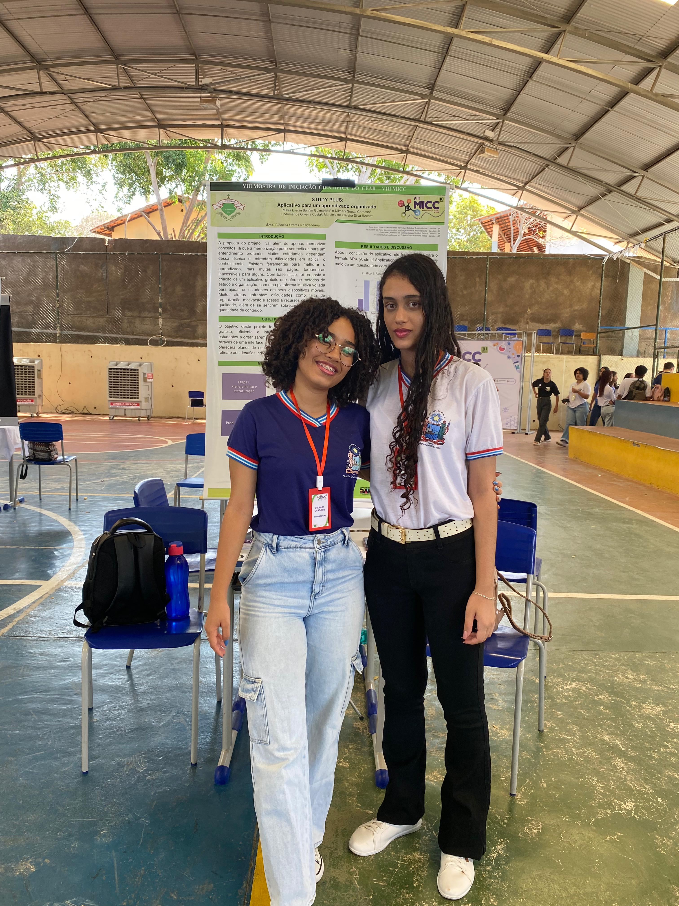

Esse trabalho foi escrito por Maíra Evellin e Uilmary: um site para um aprendizado com mais foco, organização e resultados. Pensando nas dificuldades que muitos estudantes enfrentam para manter uma rotina de estudo organizado, criamos uma plataforma que oferece ferramentas simples e personalizadas. Nosso objetivo é ajudar cada estudante a organizar melhor seu tempo, e alcançar melhores resultados, com motivação e autonomia.